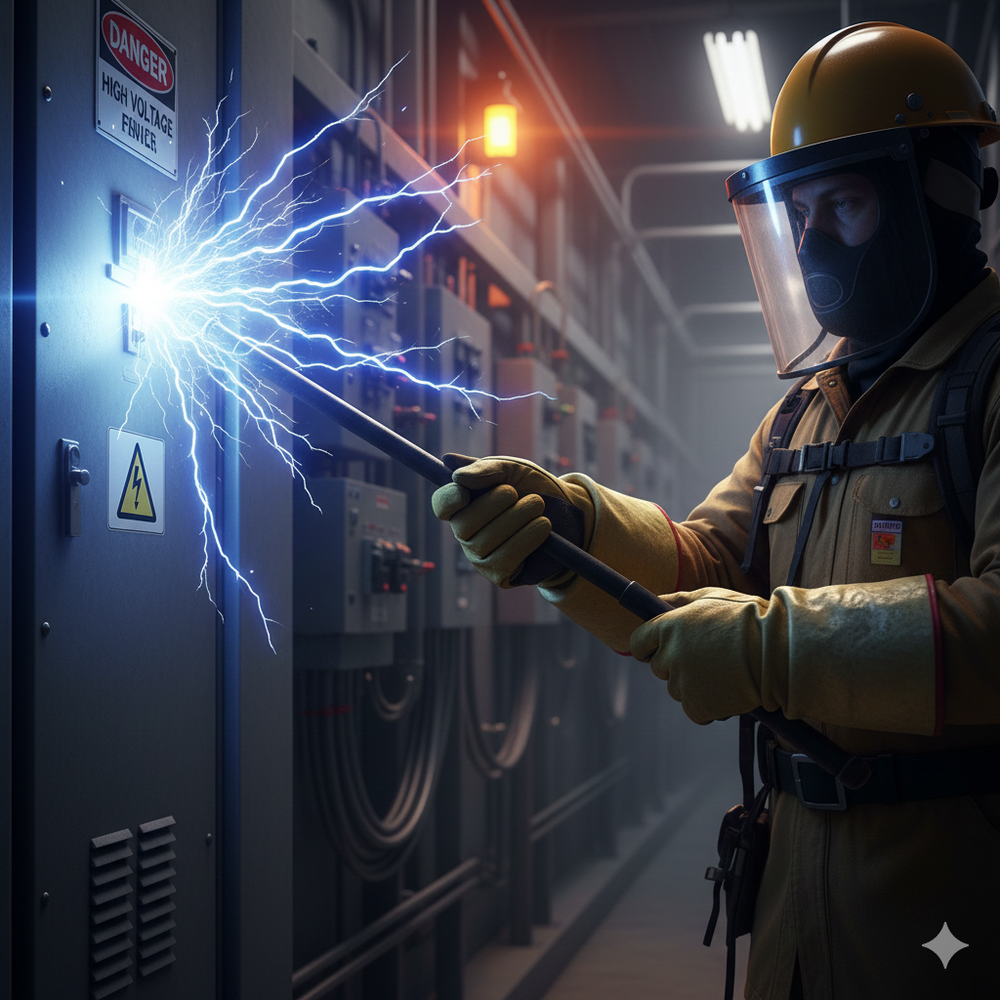
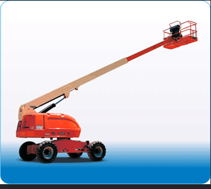

CURSO 01
CURSO 01SEGURIDAD EN EL TRABAJO
Trabajos en Altura
Reconoce los riesgos. Refuerza tu protección en cada ascenso.
AsincrónicoAprox. 1 h de videos + evaluación
APRENDE. PREVIENE. AVANZA.
Capacitación en trabajos de alto riesgo para ti y para tu equipo.
Explora nuestros cursos y consulta por las opciones virtuales, asincrónicas y presenciales.
Encuentra tu cursoCURSO 01SEGURIDAD EN EL TRABAJO
Reconoce los riesgos. Refuerza tu protección en cada ascenso.
SEGURIDAD EN EL TRABAJO
Prepárate para identificar y controlar los riesgos de incendio.

CURSO 03SEGURIDAD EN EL TRABAJO
Comprende el riesgo eléctrico. Aprende a prevenirlo.
Imágenes ilustrativas de las actividades.
CAPACITACIÓN PARA OPERADORES
¿Ya tienes experiencia? Consulta por revalidación de operador. La capacitación con práctica se programa en coordinación con TRAINPRO por WhatsApp.

Consulta por revalidación para operadores con experiencia en plataforma de brazo telescópico. Comparte el modelo de tu equipo y tu experiencia previa.

Consulta por revalidación para operadores con experiencia en plataforma tipo tijera. Comparte el modelo de tu equipo y tu experiencia previa.
ELIGE CÓMO APRENDER
Consulta la disponibilidad de cada modalidad
para el curso que te interesa.
Recibe los videos mediante enlaces y organiza tus horarios. En Altura, Caliente y Riesgo Eléctrico: aproximadamente una hora de videos, diapositivas y evaluación final. Certificado digital a los minutos de aprobar.
Consultar modalidadParticipa en sesiones con un instructor. Consulta la programación y coordina tu participación.
Consultar modalidadCoordina la capacitación de tu equipo con un instructor, según el curso y las necesidades de tu empresa.
Consultar modalidadSIGUE DESARROLLÁNDOTE
Explora otros cursos y programas
de nuestro catálogo.
Identifica las energías peligrosas antes de intervenir.
Amplía tus conocimientos en seguridad, salud ocupacional y medio ambiente.
Fortalece tus conocimientos para la prevención en el trabajo.
CAPACITACIÓN PARA EMPRESAS
Cuéntanos qué curso necesitan, cuántas personas participarán y qué modalidad prefieren. Te ayudamos a coordinar una propuesta para tu equipo.
Solicitar cotización para mi equipoElige el curso
02Cuéntanos lo que necesitas
03Recibe una cotización
CONSULTA DE CERTIFICADOS